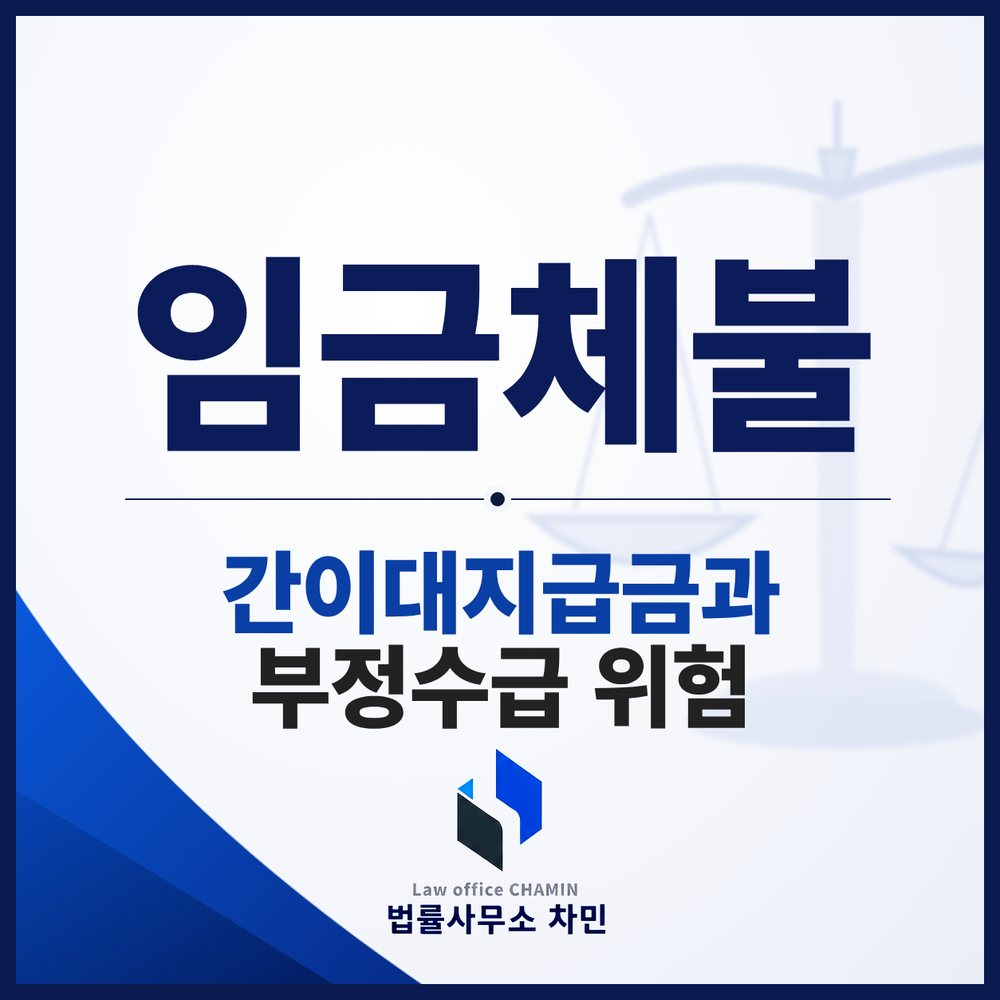

핵심 답변
임금이 밀리면 노동청 진정이나 소송으로 체불을 확인받은 뒤 정부가 일부를 먼저 주는 간이대지급금을 청구할 수 있습니다. 다만 회사가 미리 계획해 대지급금을 받게 하는 경우 근로자도 부정수급으로 처벌과 환수 대상이 될 수 있습니다.
임금이 밀렸을 때 회사가 먼저 “정부에서 나오는 돈을 받으라”고 안내하는 경우가 있습니다. 대지급금은 근로자를 위한 제도이지만, 그 과정이 회사의 계획에 따른 것이라면 근로자도 책임을 질 수 있습니다. 제도의 구조부터 살펴 두세요.

대지급금은 정부가 대신 먼저 주는 돈입니다
대지급금은 사업주가 주지 못한 임금 일부를 고용노동부장관이 사업주를 대신해 지급하고, 나중에 사업주에게 받아 내는 제도입니다(임금채권보장법 제7조, 제8조). 크게 두 갈래가 있습니다.
- 도산 대지급금: 회생절차 개시, 파산선고, 또는 고용노동부장관이 사업주에게 지급 능력이 없다고 인정한 경우에 퇴직한 근로자가 받습니다.
- 간이대지급금: 회사가 문을 닫지 않았더라도 임금 지급을 명하는 확정판결·지급명령·조정·이행권고결정이 있거나, 노동청이 발급한 체불 임금등·사업주 확인서로 체불이 확인되면 청구할 수 있습니다(같은 법 제7조 제1항 제4호·제5호).
간이대지급금은 재직 중인 근로자도 일정한 요건에서 받을 수 있고(같은 법 제7조의2), 한 사업에서 재직 중 1회로 제한됩니다. 지급 범위와 상한액은 법령과 고시로 정해지며, 퇴직일이나 진정·판결일로부터 따지는 청구 기한이 있으므로 진정을 넣을 때 노동청에 함께 확인하는 것이 좋습니다.
순서: 진정이나 소송으로 체불부터 확인받습니다
대부분은 관할 지방고용노동관서에 진정을 내고, 근로감독관 조사에서 체불액이 확인되면 체불 확인서를 발급받아 대지급금을 청구하는 순서로 진행합니다. 회사가 체불액을 다투면 지급명령이나 소송으로 판결을 받는 방법도 있습니다. 진정과 민사소송의 차이는 임금체불 진정과 소송 칼럼에서 따로 다뤘습니다.
회사가 대지급금 신청을 권할 때 조심할 점
현장에서는 사업주가 폐업이나 정리를 미리 정해 두고 몇 달 동안 일부러 임금을 주지 않은 뒤, 근로자들에게 대지급금을 신청하게 하고 그 사이 다른 명목의 돈을 먼저 주어 맞추는 식의 수법이 문제 되기도 합니다. 근로자 입장에서는 결국 받을 돈을 받는 것처럼 보이지만, 사실과 다른 체불을 꾸며 대지급금을 받는 데 가담하면 부정수급이 됩니다.
- 형사처벌: 거짓이나 부정한 방법으로 대지급금을 받거나 다른 사람이 받게 한 사람은 3년 이하의 징역 또는 3천만 원 이하의 벌금에 처해집니다(같은 법 제28조 제1항). 거짓 보고나 서류 제출만으로도 처벌 규정이 있습니다(같은 조 제2항).
- 환수와 추가징수: 부정하게 받은 대지급금은 환수되고, 받은 금액의 5배 이하를 추가로 징수할 수 있습니다(같은 법 제14조).
- 신고 포상금: 부정수급 사실을 지방고용노동관서나 수사기관에 신고한 사람에게는 포상금을 지급할 수 있습니다(같은 법 제15조).
회사가 “서류만 이렇게 써 달라”, “체불된 것으로 해 두자”고 요구한다면 응하지 말고, 실제 받은 돈과 받지 못한 돈을 급여명세서와 통장 내역으로 정리해 두세요.
체불 사업주에게 따르는 책임
임금을 기일에 지급하지 않거나 퇴직 후 14일 안에 청산하지 않은 사업주는 5년 이하의 징역 또는 5천만 원 이하의 벌금에 처해질 수 있습니다(근로기준법 제107조 제1항). 이 죄는 원칙적으로 피해 근로자의 명시적인 의사와 다르게 공소를 제기할 수 없지만, 체불사업주 명단이 공개된 기간 중의 체불은 예외입니다(같은 조 제2항). 직전 1년간 3개월분 임금 이상을 체불하거나 5회 이상·3천만 원 이상 체불한 사업주는 상습체불사업주로 정해져 정부 보조·지원사업 참여와 공공입찰에서 불이익을 받을 수 있고(같은 법 제43조의4), 명백한 고의 등 요건에 해당하면 근로자가 체불액의 3배 이내 금액을 법원에 청구할 수 있습니다(같은 법 제43조의8).
부안에서 임금을 받지 못했다면
근로계약서, 급여명세서, 출퇴근 기록, 체불 기간을 보여 주는 통장 내역을 모아 관할 지방고용노동관서에 진정하는 것에서 시작합니다. 회사가 대지급금 신청을 먼저 권하거나 서류 작성을 요구한다면 응하기 전에 사실관계부터 확인하세요. 부안노동변호사와 상의할 때는 회사가 한 안내와 받은 금액 내역을 날짜순으로 정리해 오면 판단이 빨라집니다.